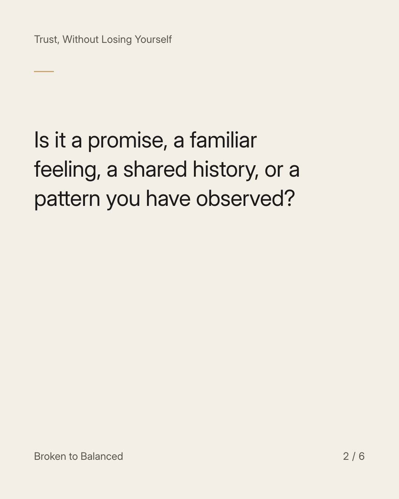
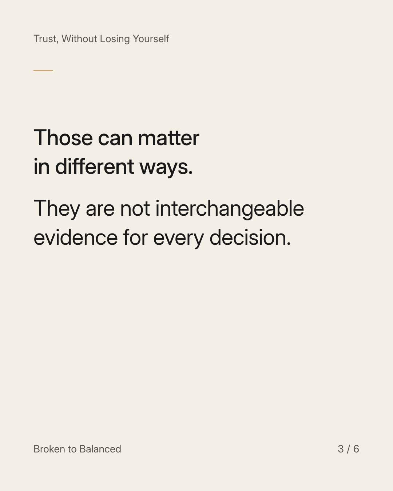
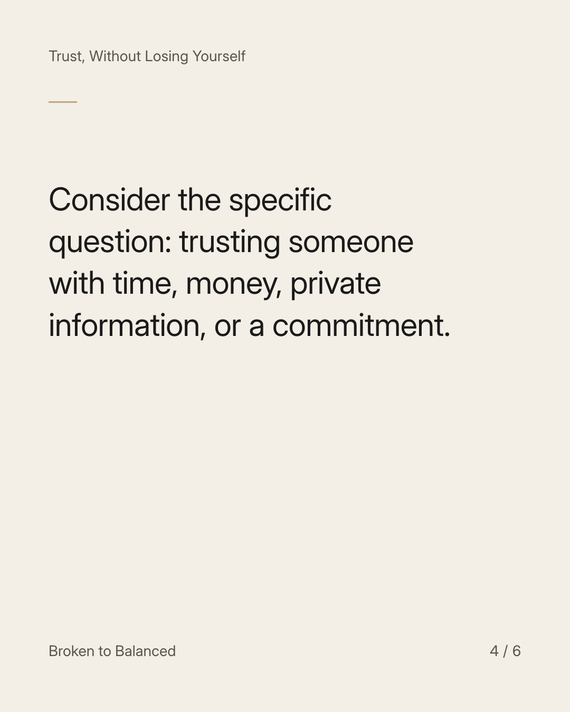
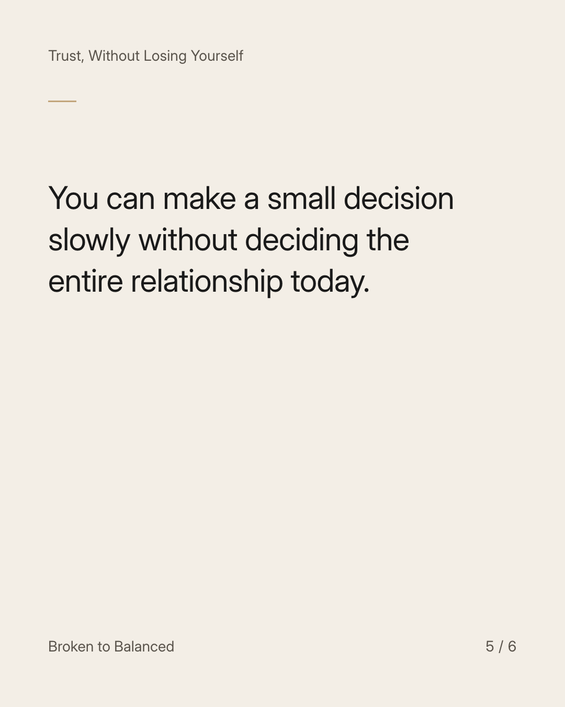
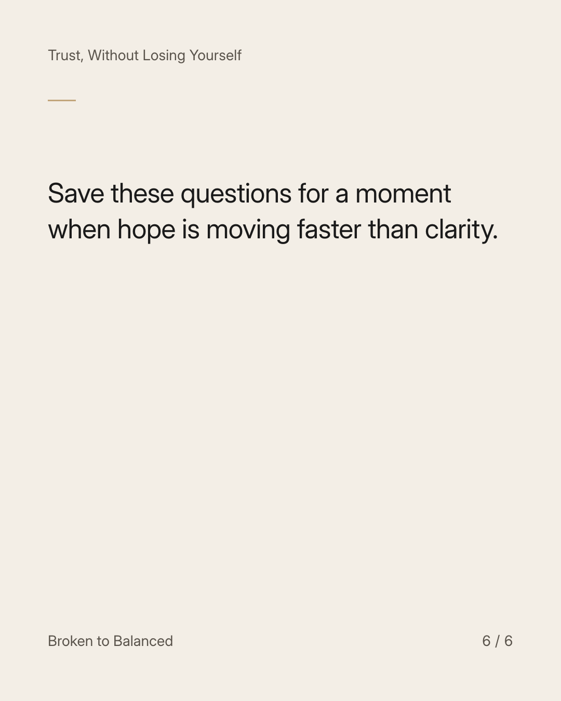

Exact text and accessibility text
Before calling it trust, ask what you are actually relying on.
Slide 1 of 6. Before calling it trust, ask what you are actually relying on.


Exact text and accessibility text
Is it a promise, a familiar feeling, a shared history, or a pattern you have observed?
Slide 2 of 6. Is it a promise, a familiar feeling, a shared history, or a pattern you have observed?


Exact text and accessibility text
Those can matter in different ways. They are not interchangeable evidence for every decision.
Slide 3 of 6. Those can matter in different ways. They are not interchangeable evidence for every decision.


Exact text and accessibility text
Consider the specific question: trusting someone with time, money, private information, or a commitment.
Slide 4 of 6. Consider the specific question: trusting someone with time, money, private information, or a commitment.


Exact text and accessibility text
You can make a small decision slowly without deciding the entire relationship today.
Slide 5 of 6. You can make a small decision slowly without deciding the entire relationship today.


Exact text and accessibility text
Save these questions for a moment when hope is moving faster than clarity.
Slide 6 of 6. Save these questions for a moment when hope is moving faster than clarity.
Exact caption
Plain-text fallback: select and copy the caption.